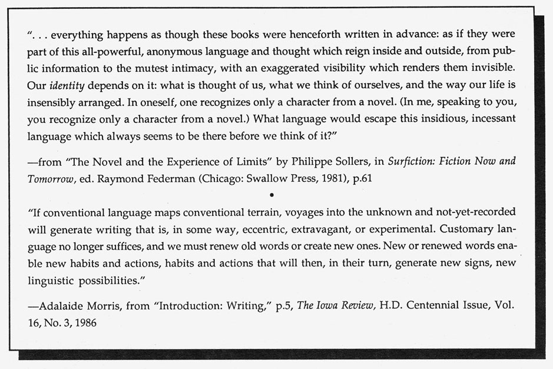

.endnotes
Editor's Notes
"We do know a little now what prose is. Prose is the balance the emotional balance that makes the reality of paragraphs and the unemotional balance that makes the reality of sentences and having realized completely realized that sentences are not emotional while paragraphs are, prose can be the essential balance that is made inside something that combines the sentence and the paragraph, examples of this I have been reading to you."
Publications to note: Fanny Howe's The Lives of a Spirit,
released this summer by Sun & Moon Press, Los Angeles; Gertrude Stein's Geography & Plays, recently reprinted by Station Hill Press; the collection of essays, The Female Body in Western Culture,
ed. Susan Suleiman, (Harvard Univ. Press, 1986), including Catharine Stimpson's essay "The Somagrams of Gertrude Stein;" Diane Glancy's One Age in a Dream,
Milkweed Press, 1986; Laura Moriarty's poems, Duse,
out from Coincidence Press; Chapbook No. 26, new poems by Maureen Owen, from the Abacus
series; Everyday Life,
an anthology of poems, prose, scripts and photographs by women, touching obliquely or directly on the quotidian, with an emphasis on the erotic, edited by Chris Tysh and George Tysh, In Camera Press, Detroit. Contributors include Bernadette Mayer, Jessica Hagedorn, Maureen Owen, Kathy Acker, Olga Broumas, Rae Armantrout, Lyn Hejinian, Carla Harryman, Laura Moriarty, Laura Chester and many others.
With this issue,
HOW(ever)
welcomes Chris Tysh as a new Contributing Editor to take the place of Beverly Dahlen, who will retire from active editorial participation but remain a comrade in spirit. Chris Tysh, born and educated in France, lives and teaches in Detroit, where she writes both poetry and criticism and co-edits the innovative book list from
In Camera,
Literature of Sexual Politics and Imagination. Chris will be in San Francisco reading her poems at New Langton Arts, together with George Tysh, on Friday, Nov. 6, 8 pm, and will share a "conversation" with feminist scholar Carolyn Burke on Saturday afternoon, Nov. 7, 3 pm, at Intersection, co-sponsored by The Poetry Center. Chris and Carolyn will be talking about Marguerite Duras and the impact of French feminist scholarship, and will open a dialogue with the audience at the finish of their talk. A five-part forum, "WRITING THE MARGIN: editing / publishing / 'theory': Magazines-at-Large," will be presented by Intersection, 766 Valencia St., San Francisco, during November, featuring evenings focused on four specific literature magazines which publish poetry and criticism outside the mainstream tradition, finishing with a fifth evening of dialogue among the editors of those and other publications. Dates are: Nov. 3, Acts;
Nov. 10, HOW(ever);
Nov. 17, Poetics Journal;
Nov. 24, Hambone;
Dec. 1, panel/forum including the above journals plus Mirage, Jimmy & Lucy's House of K, and possible others.
HOW(ever)
is available in a fourth series of four numbers. For libraries interested in purchasing the complete series, beginning with Vol. I, we have a limited number of archival sets. Archival sets cost $12 per volume for individuals; $15 for institutions. Subscriptions for Vol. IV cost $8 for individuals; $10 for institutions. Individual copies of
HOW(ever),
often asked for as "sample copies," are available at $2.50 each from Small Press Distribution, 1814 San Pablo, Berkeley, CA 94702. Subscription checks go to HOW(ever),
c/o Jaffer, 871 Corbett Ave., San Francisco, California 94131. All submissions, including material for
alerts
and
postcards,
should be sent to Kathleen Fraser, 1936 Leavenworth, San Francisco, CA 94133.  go to this issue's table of contents
 Certainly Stein's discovery that it is the emotional balance that makes the reality of paragraphs--as distinct from the reality of the sentence--continues to be borne out in much of current writing practice. We do know now a little what paragraphs are, having received many from poets who require a different unit of thought and feeling to linguistically measure the thing being addressed (the moment under pressure). . . "the essential balance that is made inside something," not adequately arrived at with the strategy of the line, the stanza or the sentence on its own.
Certainly Stein's discovery that it is the emotional balance that makes the reality of paragraphs--as distinct from the reality of the sentence--continues to be borne out in much of current writing practice. We do know now a little what paragraphs are, having received many from poets who require a different unit of thought and feeling to linguistically measure the thing being addressed (the moment under pressure). . . "the essential balance that is made inside something," not adequately arrived at with the strategy of the line, the stanza or the sentence on its own.

 •
•

 •
•

 •
•